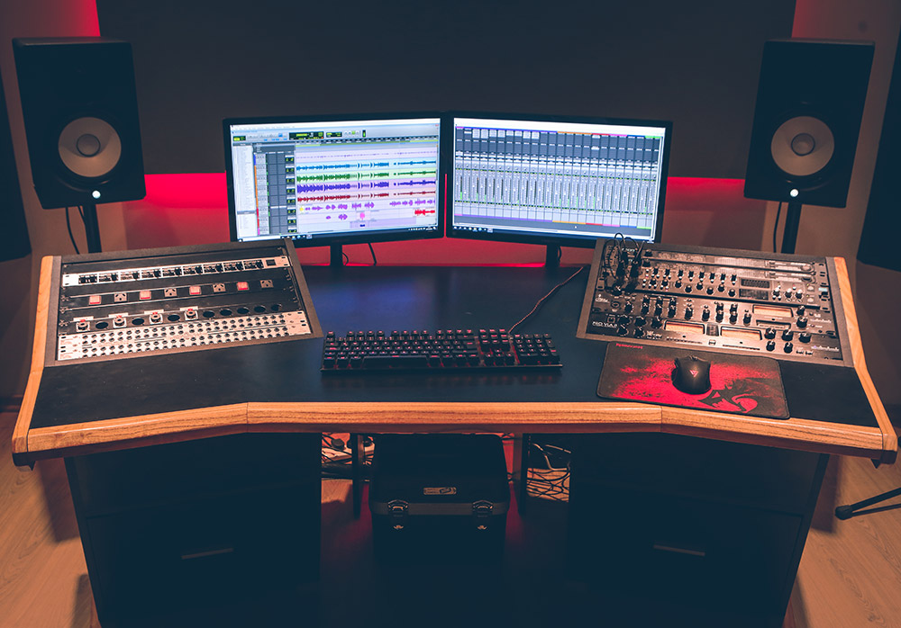
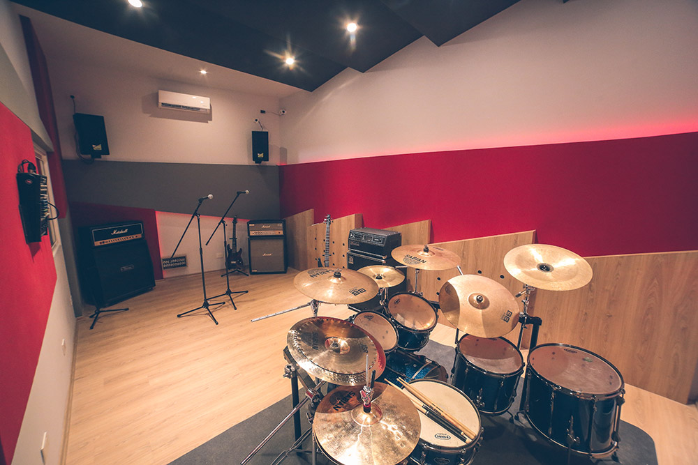
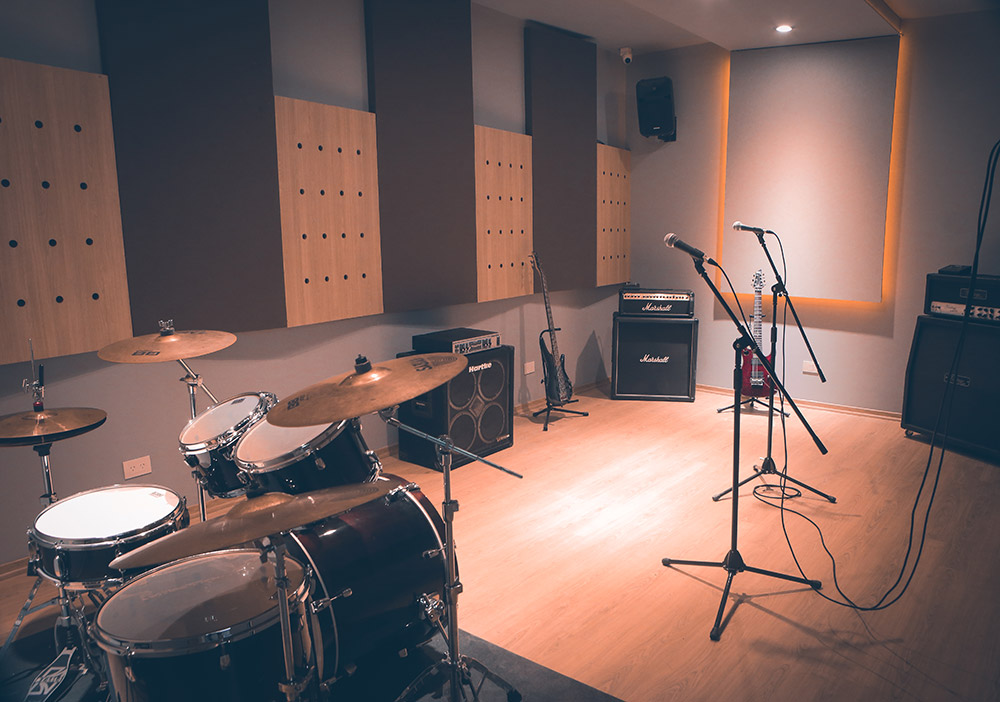

El Estudio
El estudio cuenta con un cómodo control room con vistas al exterior y a las salas de grabación. Amplio espacio tanto para los técnicos, como para músicos y productores. Nuestro equipamiento permite la captura fiel y una excelente audición desde todos los ángulos gracias al diseño de esta parte del edificio. También contamos con una antesala, un bar, baños y demás servicios que permiten una estancia cómoda y relajada.
Con equipamiento sólido, combinando tanto opciones analógicas como digitales, y una interesada predisposición de los técnicos de la casa, todo está dado para que la grabación, la mezcla, las pruebas y los ensayos focalicen nuestra atención en la música, la voz, el sonido y en el proyecto deseado.
Control Room
Listado de Equipos
- Scarlett 18i20
- Focusrite Octopre MKII
- Channel Strip Art Voice Channel
- Compresor Art Pro VLA II
- Motu 2408MK3 Firewire
- Amplificador de auriculares Behringer Powerplay 8CH HA8000
- 2 Patchbay Behringer Ultrapatch Pro PX3000
- Monitores Yamaha HS8
- Conectores en mesa HI Z y SPK a las 2 salas
- 2 Monitores de video Samsung S23C350 para mejor visualización al trabajar
Equipos exclusivos Estudio:
- Cabezal mesa Boogie Dual Rectifier solo head
- Batería Tama Superstar Hyper-Drive 10' 12' 14' 16' 22' redo 14'
- Parches Evans G2 toms
- Parche Evans EQ3 bombo
- Parche Evans Genera Dry redoblante
- Corral de batería Pearl DR-80 con 5 clamps
- Teclado Midiplus x8 con pedal de sustain
Micrófonos:
- Rode NT2A con shock mount y pop filter original
- Par Rode NT5 con pipeta estereo
- AKG D112
- Shure Beta 52
- Shure SM57
- Sennheiser E604 X7
- Par Sennheiser E614
- Sennheiser E602-II
- Auriculares Akg K44
Aire acondicionado Hyundai Inverter 3000 frigorías frío/calor
Sala 1
Listado de Equipos
Guitarras:
- Cabezal Marshall DSL100 + Caja Vintage Electric 4x12 Celestion V30
- Cabezal + Caja Marshall AVT 150H Tribute
Bajo:
- Combo Ampeg SVT450
Batería:
- Tama Silverstar All Birch 10' 12' 16' 22' + redo 14'
- Pedal Tama Iron Cobra 200
- Alfombra Brain Damage 2m x 2.5m con tope para bombo
- Holder palillos
Extras:
- Bafles dbTechnologies B-Hype 10' activos
- Consola Mackie ProFx 8 V2
- Micrófonos Shure SM58
- Aire acondicionado Hyundai Inverter 3000 frigorías frío/calor
Sala 2
Listado de Equipos
Guitarras:
- Marshall Valvestate 100V 8100 cabezal + caja
- Cabezal Vintage Electric Super Lead + caja vintage Electric 4x12 V30
Bajo:
- Cabezal Hartke HA2500 + caja Hartke VX410
Batería:
- Premier APK Cabria Inglesa 8' 10' 12' 14' 22' redo 14'
- Pedal Premier doble cadena
- Alfombra Brain Damage 1.5m x 2m con tope para bombo
- Holder palillos
Extras:
- Bafles Samson Auro D210 activos
- Consola Mackie ProFx 8 V2
- Micrófonos Shure SM58
- Aire acondicionado Hyundai Inverter 3000 frigorías frío/calor